Иди за кроликом
“Донни Дарко” и парадоксы времени
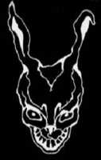
Алиса-то не так уж удивилась, когда услыхала, что Кролик сказал: “Ай-ай-ай! Я опаздываю!”... ...Но когда Кролик достал из жилетного кармана (да-да, именно!) ЧАСЫ (настоящие!) и, едва взглянув на них, опрометью кинулся бежать, тут Алиса так и подскочила!... ...Сгорая от любопытства, она со всех ног помчалась вдогонку за Кроликом... ...Она поспела как раз вовремя, чтобы заметить, как он скрылся в большой норе под колючей изгородью. В ту же секунду Алиса, не раздумывая, ринулась за ним.
Льюис Кэрролл, “Алиса в Стране Чудес”
Опытные кинолюбители, конечно же, знакомы с таким явлением, как “неизвестный шедевр”. Это, если вкратце, представляет собой фильм великолепного качества: стиль, режиссура, сценарий, игра актеров — все на высоте, однако большинство зрителей никогда не слышали о нем. Такие картины показываются лишь в некоторых кинотеатрах. Они выпускаются на кассетах и DVD ограниченным тиражом. Те, кто случайно увидел это кино, остается от него в восторге. Почему так происходит?
Хорошие примеры таких картин: “Святые из Бундока” (1999), “Помни” (2000), “Порок” (2001) или “Донни Дарко” (2001) — тот самый фильм, который предлагается вашему вниманию на DVD-диске этого номера.
Летайте самолетами аэрофлота
“Донни Дарко” стал одним из первых фильмов, ознаменовавших собой новую эру молодых голливудских режиссеров. Нет, кризиса кадров на “Фабрике грез” в конце 20 — начале 21 века, конечно же, не было, однако именно в этот период продюсеры стали обращать более пристальное внимание на новые фамилии и нераскрытые таланты — тех, кто действительно мог бы влить “свежую кровь” в калейдоскоп надоевших кинематографических штампов.
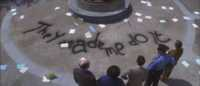
Интересно, можно ли заставить обычного человека воткнуть топор в голову бронзовой статуе?
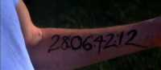
В 2002 году вышел фильм «28 дней спустя». Может быть, его авторы искали вдохновение в «Донни Дарко»?
Одним из таких юных дарований (юных — в буквальном смысле слова, так как на момент съемок фильма ему исполнилось 26 лет) был Ричард Келли — режиссер, который утверждал, что образцом для творческого подражания ему служат два фильма: “Звездные войны: Эпизод 5 — Империя наносит ответный удар” (1980) и “Безумный Макс 2” (1981).
Ричард Келли согласился написать сценарий “Донни Дарко” и возглавить съемки фильма за гонорар в $9000 (!!!) — сумма, по голливудским меркам не просто маленькая, а издевательская и неприличная
Старт в прокате был удручающим. Кое-какие деньги удалась собрать за счет продажи кассет, но в целом “Донни Дарко” получил негласное клеймо “отстой” и отправился на кинематографическое кладбище — до тех пор, пока в свет не вышла обновленная версия этого фильма. Туда были добавлены новые сцены, изменен саундтрек. После этого картина стала не только яснее и понятнее — она выскочила на торговые прилавки, как черт из коробочки, и сразу же оказалась культовой (естественно, на DVD “Мира фантастики” — обновленная версия фильма).
У каждого уважающего себя фильма есть “таглайны” (taglines — подзаголовки, или попросту лозунги). “Донни Дарко” не был исключением:
- Ты никогда не можешь зайти слишком далеко...
- Что ты сделаешь, если узнаешь свое будущее?
- Бойся темноты (игра слов: “dark” — англ. “темнота”).
- Темно. Темнее. Дарко. (аналогично — Dark, Darker, Darko).
- Зачем ты носишь этот глупый костюм человека?
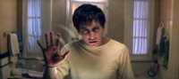
Матрица меняет структуру?
Фильм начинается многообещающе — главным героем выступает молодой человек приятной наружности, о котором зрителю сообщается, что он только что “перестал принимать таблетки”. Вскоре выясняется, что этими таблетками были нейролептики, а Донни — не романтический мечтатель, а заурядный клинический шизофреник (галлюцинации, голоса в голове и прочие радости жизни).
Как и следовало ожидать, по ходу фильма диагноз себя полностью оправдывает — ночью 2 октября 1988 года на пороге дома нашего героя появляется огромный (ростом с человека) говорящий кролик Фрэнк. Причем не пушистый миленький зверек, каким его принято изображать в детских мультфильмах, а на редкость страшная коряга с кривыми ушами, безумными глазами и недоброй оскаленной улыбкой.
Помимо этой очевидной странности, кролик выделялся еще и тем, что он подозрительно напоминал человека, одетого в карнавальный костюм. Это милое животное сообщило Донни, что ровно через 28 дней, 6 часов, 42 минуты и 12 секунд наступит конец света.
В довершение всех этих прелестей, на дом главного героя падает здоровенная самолетная турбина.
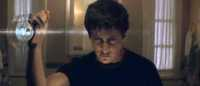 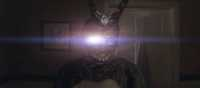
А кролик-то одноглазый!
Некоторые критики усмотрели в кролике Фрэнке отсылку к фильму “Харви” (1950), где у главного героя был точно такой же друг — огромный кролик Харви, оказавшийся в итоге никем иным, как “пука” (“puca” — в ирландском фольклоре — волшебное существо из рода эльфов).
Сам режиссер категорически отвергает это, заявляя, что ни разу не видел данный фильм.
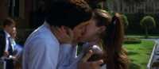
Все будет хорошо.
В фильме вскользь говорится о том, что лекарства, принимаемые Донни, на самом деле были обычными плацебо (от лат. “placeo” — быть довольным; т.е. имитация лекарства, оказывающая на пациента чисто психологическое воздействие). Таким образом, одной из трактовок картины (забегая вперед, скажем, что сюжет можно истолковывать по-разному) можно считать то, что Донни испытывал галлюцинации под действием самовнушения — ведь он был уверен, что прекратил приниматьнастоящие таблетки от шизофрении.
Что именно происходит дальше? Фрэнк руководит Донни, подсказывая ему некие действия (хулиганские и даже жестокие), которые нужно совершить для того, чтобы цепочка причинно-следственных связей выстроилась в определенной последовательности. Для чего? Чтобы спасти вселенную от коллапса.
Дело в том, что Донни должен был погибнуть в ту ночь, когда на его дом упала турбина самолета. Официальное расследование этого происшествия показало, что никакого самолета в том районе в то самое время не было. Следовательно, турбина появилась из ниоткуда. Это — первая подсказка к сюжету фильма, который в самых общих чертах выглядит следующим образом.
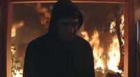
Никогда не слушайте советы сумасшедшего кролика.
Да, наш герой должен был погибнуть под турбиной. Но в тот самый момент, когда он услышал голос Фрэнка и вышел из дома, Донни перенесся в параллельную вселенную — мир, очень похожий на тот, где он родился, за исключением пары мелочей, связанных с парадоксами путешествия по пространственно-временному континууму (например, вышеупомянутое отсутствие самолета). То есть, по сути дела, турбина упала уже в альтернативном измерении.
Новая вселенная крайне нестабильна. Если верить таинственному Фрэнку, ее коллапс произойдет через 28 дней. Что самое неприятное — эта катастрофа уничтожит также и “основную” вселенную.
Донни Дарко является в некотором смысле “избранным” — он обладает способностями, которые позволяют менять ход истории в альтернативной вселенной. И у него есть лишь 4 недели, чтобы попытаться спасти мироздание, сделав так, чтобы события той ночи повторились, но их финал был бы другим — тем, каким он должен быть изначально.
Здесь мы сталкиваемся с забавным парадоксом времени, который уже описывался в статье “Сквозь время” (“Мир фантастики”, №2(18), февраль 2005). Дело в том, что если бы Донни не перешел в альтернативную вселенную, то турбина бы не упала, так как ее появление обусловлено именно этим переходом. Если вы посмотрите фильм, то также поймете, что, попав в новую вселенную (кстати, вероятно, что Донни создал ее сам), главный герой создал условия для появления турбины, но еще не направил ее в первоначальный мир (так называемое “кольцо времени”).
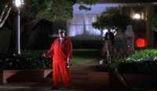
На протяжении всего фильма за Донни следил странный человек в красном.
У фильма есть свой сайт — причем очень необычный: http://ruinedeye.com/cd/time1.htm.
Если вы испытываете сложности с навигацией по нему, посетите http://ruinedeye.com/cd/aid1.htm.
Это интересно:
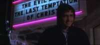
В этом кинотеатре показывают два совершенно несовместимых фильма.
- В фильме снималась сестра Джейка Джиленхала — Мэгги, которая, как вы уже, наверное, догадались, сыграла роль его (Донни Дарко) старшей сестры Элизабет.
- Отец режиссера Ричарда Келли в 1970-х работал в NASA над программой марсианского модуля “Викинг”. Он разработал камеру, которая сделала первые качественные снимки красной планеты.
- У зрителей часто возникают мысли о том, что название картины как-то связано с гангстерской драмой Донни Браско (1997). Режиссер категорически отрицает это.
- Фильм был снят за 28 дней — то же самое время, которое отведено на события его сюжета.
- В начале фильма мать Донни читает книгу Стивена Кинга “Оно” о воплощении детских страхов, имеющем облик клоуна. В конце фильма одного из персонажей сбивает машина, из которой выскакивает клоун.
- Имеется несколько предположений относительно того, кто сказал, что “Дверь на чердак” (cellar door) — самая красивая фраза в английском языке. Режиссер Ричард Келли во время одного из своих интервью предположил, что автор этого высказывания — Эдгар По. Однако Хамфри Карпентер, в своей работе: “Толкин: Биография” утверждает, что это было сказано автором “Властелина Колец”.
- Обратите внимание — в кинотеатре, где Фрэнк показывает Донни портал, зрителям предлагаются два совершенно неподходящих друг другу фильма: “Зловещие мертвецы” и “Последнее искушение Христа”. Кстати — этот театр действительно существовал (Aero Theatre, Санта-Моника, штат Колорадо), но был закрыт в 2003 году.
- На плакате фильма использовался шрифт в псевдоарабском стиле. После событий 11 сентября 2001 года его заменили обычным, хотя в самом фильме этот шрифт остался.
Цытаты
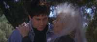
Всякое живое существо на планете умирает в одиночестве.
Гретхен: Ты какой-то странный...
Донни: Извини...
Гретхен: Нет, это был комплимент.
Гретхен: Донни Дарко... Что это, черт возьми, за имя? Так обычно зовут супергероев или типа того...
Донни: А почему ты думаешь, что это не так?
Роберта Спэрроу: Всякое живое существо на этой планете умирает в одиночестве.
Гретхен: Моя мама подала на отчима в суд... У него были... эмоциональные проблемы.
Донни: О, да! У меня тоже есть эмоциональные проблемы!
Гретхен: Он четыре раза ударил ее ножом в грудь.
Донни: Ох...
Философия путешествий во времени
DVD с “Донни Дарко” содержит ОЧЕНЬ важный источник информации, без которого мы не сможем полностью оценить замысел этого фильма, — книгу “Философия путешествий во времени” (“The Philosophy of Time Travel”), написанную Робертой Спэрроу — она же “Бабушка Смерть” в фильме.
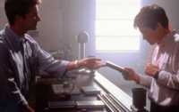
Лучший подарок — книга.
Вступление.
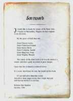
Прежде всего, хочу поблагодарить сестер ордена Святого Иоанна в Александрии, штат Вирджиния, за их неоценимую (по моему мнению) помощь. Милостью Божьей, это:
Сестра Элеанс Льюис
Сестра Франческа Годар
Сестра Элен Дэвис
Сестра Катерина (Арнольд)
Сестра Мэри Ли Понд
Сестра Вирджиния (вязальщица)
Данная книга написана в качестве простого и доступного руководства во время великой опасности.
Я молюсь за то, чтобы все изложенное в ней осталась плодом моего воображения.
В противном случае я молюсь за тебя, читатель.
Если я еще буду жива, когда описанные события произойдут, надеюсь, ты свяжешься со мной до того, как будет слишком поздно.
Роберта Энн Спэрроу, октябрь 1944
Глава 1. Другой мир.
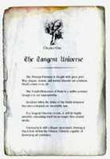
Над нашим миром нависла великая угроза. Повсюду войны, чума, голод и прочие невзгоды. Смерть идет к нам.
Четвертое измерение времени — реальное и стабильное явление, которое вполне доступно для нас.
Случаи возникновения аномалий в нем редки, хотя и не исключены.
Когда возникнет другой мир (tangent universe — тангенциальная, касательная вселенная; прим. МФ), он будет крайне нестабилен и просуществует всего несколько недель.
Коллапс другого мира создаст черную дыру, которая поглотит все сущее.
Глава 2. Вода и металл.
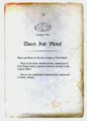
Вода и металл — ключевые элементы путешествий во времени.
Вода — основной материал для создания порталов между мирами.
Металл — промежуточный элемент, из которого сделаны Артефакты.
Глава 4. Артефакты и люди
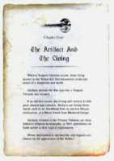
Когда появится другой мир, возникнет воронка. Люди, живущие около нее, окажутся в совершенно другой, опасной вселенной.
Первым признаком этого будет появление Артефактов.
При обнаружении последних людям следует хранить и изучать их. Примером могут служить такие Артефакты, как металлический наконечник стрелы, принадлежащий культуре майя, или меч из средневековой Европы.
Артефакты, вернувшиеся из другого мира в первоначальный мир, становятся объектами религиозного поклонения.
Божественное вмешательство является единственным подходящим объяснением причин появления Артефактов.
Глава 6. Хранитель.
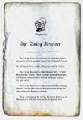
Задачей Хранителя является возвращение Артефакта в первоначальный мир.
Никто не знает, как или почему человек становится Хранителем.
Хранитель благословлен великими силами. Он сильнее обычного человека, обладает способностью к телекинезу, контролю разума, пиро- и гидрокинезу.
Когда Хранитель попадает в другой мир, его одолевают странные видения, сны и голоса.
Хранителя окружают Управляемые. Они будут страшиться его и сделают все, чтобы он умер.
Глава 7. Управляемые люди
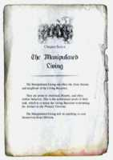
Управляемыми людьми являются близкие друзья и родственники Хранителя.
Они склонны к необъяснимому, странному, жестокому поведению. Это — неизбежное последствие их основной задачи, которая заключается в том, что они будут невольно помогать Хранителю вернуть Артефакт в первоначальный мир.
Управляемые люди сделают все, что угодно, лишь бы спасти себя от Забвения.
Глава 10. Управляемые мертвецы
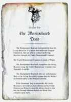
Управляемый мертвец гораздо могущественнее Хранителя. Если человек умрет в другом мире, он сможет связаться с Хранителем в первоначальном мире посредством Конструкта четвертого измерения.
Конструкт четвертого измерения сделан из воды.
Управляемый мертвец будет манипулировать Хранителем, используя упомянутый Конструкт.
Управляемый мертвец будет подстраивать все так, чтобы Хранитель шел к своей цели.
Если это удастся, то у Хранителя не будет иного выхода, чем отправить Артефакт назад во времени в первоначальную вселенную, предотвращая таким образом коллапс черной дыры.
Глава 12. Сны
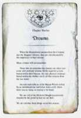
Когда Хранитель просыпается после своего путешествия по другому миру, его посещают странные сны о прошлом.
Многие из них вскоре забудутся.
Остатки воспоминаний будут терзать Хранителя.
Древние мифы рассказывают о воине майя, убитом наконечником стрелы, упавшем с утеса. Но там не было ни армии, ни врага.
Нам рассказывают о средневековом рыцаре, убитом мечом, появившимся из ниоткуда.
Нам говорят, что все это не случайно.
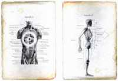
В груди каждого человека находятся сферы судьбы.
Из картотеки шедевров
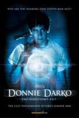
Название: Донни Дарко (Donnie Darko)
Производитель: Adam Fims Productions, Flower Films, Gaylord films, Pandora Cinema
Год выпуска: 2001
Длительность: 113 минут.
Бюджет: $4,5 млн.
Режиссер: Ричард Келли
Сценарист: Ричард Келли
Актеры: Джейк Джилленхал, Мэгги Джиленхал, Холмс Осборн, Патрик Суэйзи, Марк Хоффман, Дэйви Чейз, Джеймс Дювал, Мэри МакДоннел, Артур Таксиер, Дрю Берримор
Кассовые сборы: $1,270,522 млн. (включая мировой прокат)
Странный шедевр
“Донни Дарко” — безусловно выдающаяся картина. Она чем-то напоминает работы Дэвида Линча, однако в ней нет той яркой манифестации безумия, которая переворачивает все с ног на голову и оставляет зрителя одураченным. Напротив, в этом фильме присутствует неуловимое очарование романтичности, которое определяется особым отношением главного героя ко всему окружающему миру.
Смех в конце фильма — это вовсе не обязательный признак хэппи-энда.
“Донни Дарко” необычен, даже странен. Его нельзя назвать постмодернистской картиной — он честен и самобытен. Его сложно отнести к какому-либо жанру (именно поэтому у режиссера были проблемы с поиском дистрибьютора в США), в нем нет однозначно счастливой концовки, его сюжет может быть истолкован по-разному — причем некоторые интерпретации зачастую противоречат друг другу, однако, вместе с тем, “Донни Дарко” является общепризнанным шедевром “странной” фантастики — умной, загадочной и оригинальной.
Музыка в фильме
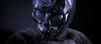
Нет, ребята, я не Багс Банни...
- Carpathian Ridge 1:35
- The Tangent Universe 1:50
- The Artifact and Living 2:30
- Middlesex Times 1:41
- Manipulated Living 2:08
- Philosophy of Time Travel 2:02
- Liquid Spear Waltz 1:32
- Gretchen Ross 0:51
- Burn it to the Ground 1:58
- Slipping Away 1:17
- Rosie Darko 1:25
- Cellar Door 1:03
- Ensurance Trap 3:11
- Waltz in the 4th Dimension 2:46
- Time Travel 3:01
- Did you know him 1:46
- Mad World 3:07
- Mad World (Alternate Version) 3:37